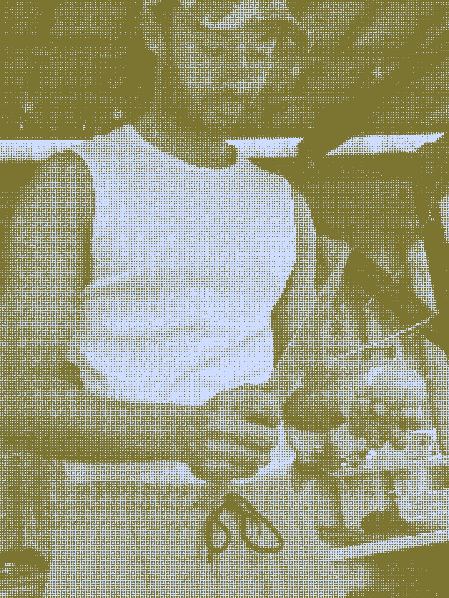

I’m Jordan, a plant-centric chef and nutritional therapist with 15+ years of experience bringing healing, balance, and vitality to the table. By combining seasonal culinary craft with naturopathic principles, I build tailored therapeutic plans and intuitive food concepts and workshops that help people thrive. Alongside my private client practice, I collaborate with ProVeg International to advocate for plant-based nutrition in the public sector, helping schools and hospitals increase access to healthy, sustainable meals. Interested in working together on clinical nutrition, culinary design, or public health initiatives? Let’s connect.